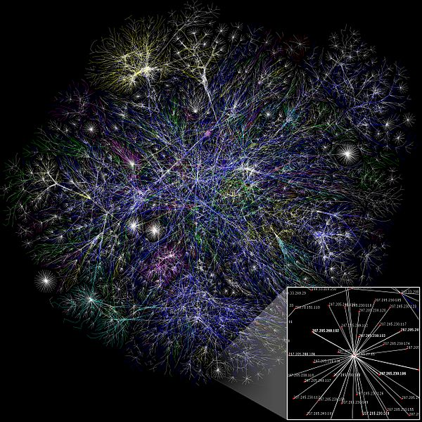

Startsida
Internet är idag en självklarhet i det svenska samhället och vi är till stor del beroende av att det fungerar för att kunna klara av vardagens uppgifter och utmaningar. Omkring en tredjedel av jordens befolkning har tillgång till internet med hjälp av 9 miljarder datorer. Men hur började allt? Hur kom internet att bli en så stor del av våra liv?
Det ska du få läsa mer om här!
Wikipedia, Matt Britt.
Bilden illustrerar internettrafiken mellan nätverk.